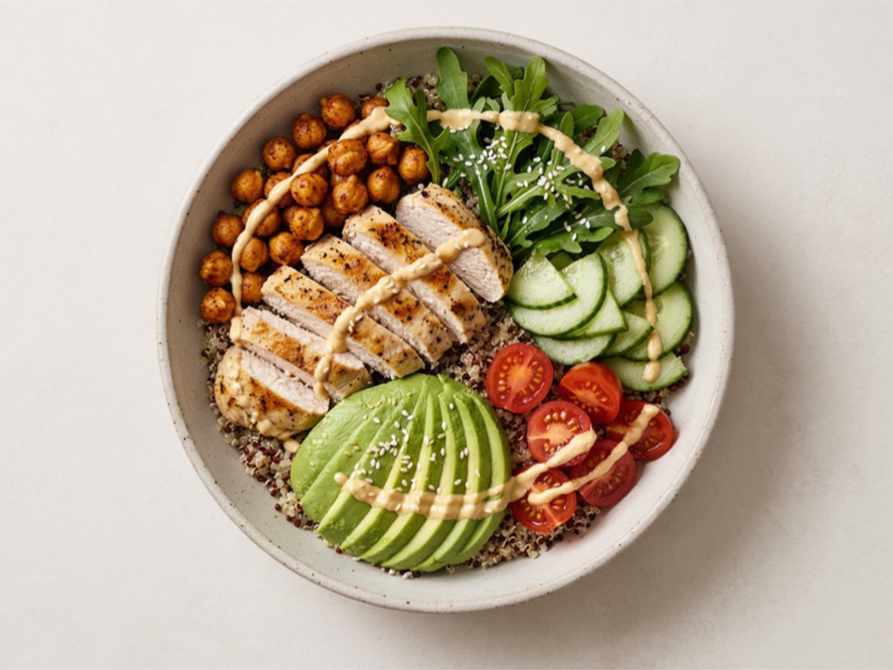

Обіди · № 038
Боул з кіноа, нутом і овочами
30 хвчас
2порції
9інгредієнтів
КБЖВ · ПП-версіяна порцію
598ккал
41 гбілки
18 гжири
72 гвуглеводи
Класична версія: 663 ккал · Ж 30 г → тут на 10% менше калорій
Уся страва: 898 г · 1196 ккал · білки 82 г · жири 37 г · вуглеводи 144 г
На 100 г: 133 ккал · білки 9 г · жири 4 г · вуглеводи 16 гПовний рецепт — за підпискою
Інгредієнти з точними грамовками й покрокове приготування страви «Боул з кіноа, нутом і овочами» доступні в платному Telegram-каналі Артема Трачука. Підписка відкриває всі 100 ПП-рецептів.
- 9 інгредієнтів з точними грамовками
- 4 кроки приготування
- КБЖВ і нові рецепти щотижня
Вже підписані? Увійдіть через Telegram, і рецепт відкриється тут.
Безкоштовно: по 2 рецепти з кожного розділу — шукайте їх без позначки 🔒.